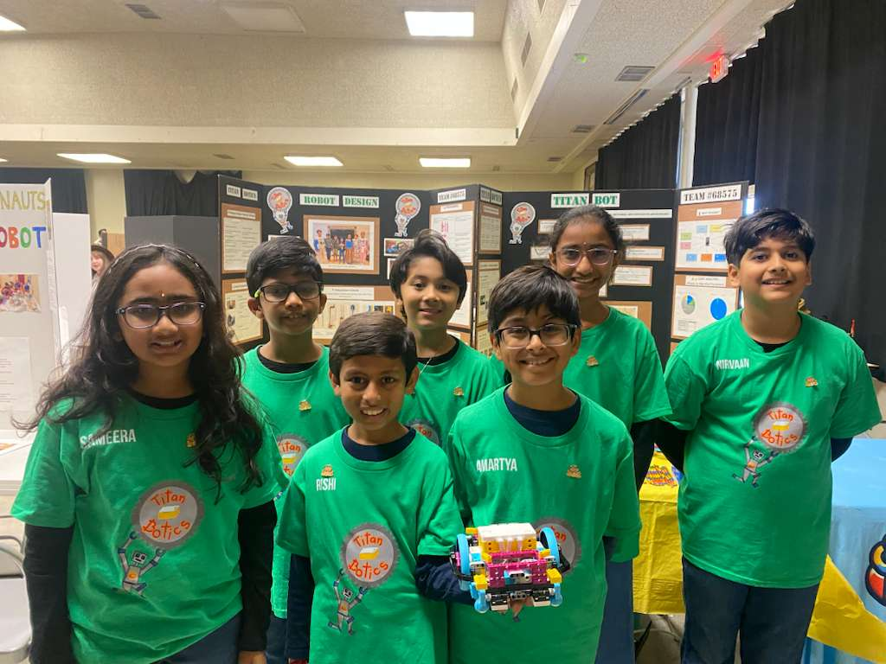

Sameera
Hi, I’m Sameera! In my free time, I like to practice martial arts, play with LEGO, and go swimming.
Our first season · 2025–26
UNEARTHED was our first FIRST LEGO League season. We took our ideas to a tournament—and brought home something to be proud of.
The team behind our first season

Meet our UNEARTHED lineup! These introductions are from our first season, lightly edited from our original team website.
Hi, I’m Sameera! In my free time, I like to practice martial arts, play with LEGO, and go swimming.
Hi, I’m Aadhi, and I’m one of the original members of Titanbotics. I’ve loved LEGO since I was one year old! Don’t be surprised if I end up building my whole room out of LEGO.
Hello, I’m Rishi! I love LEGO robotics because there are endless possibilities for what you can make. LEGO is also my favorite toy.
Hi, I’m Ariv! In my free time, I like to build train tracks and LEGO, and learn how to design fashionable clothes.
Hi, I’m Amartya! I love LEGO robotics. In my free time, I like to play with LEGO NINJAGO sets.
Hi, I’m Aashvi! I love LEGO robotics because you can build your own robot and command it to do your tasks.
Hi, I’m Nirvaan! I love LEGO robotics because it combines my favorite toy with my favorite concept.
There were 24 teams at our qualifier, and we won first place in Core Values! This award celebrates how a team works together.
We didn’t qualify for Regionals at first. Later, we received an invitation to the Regional Competition and got back to improving our robot and project.
UNEARTHED · 2025–26
Our Core Values winning moments, together.
UNEARTHED · 2025–26
We took our project beyond the competition table. Open a video to see our team sharing it with others.
More than a robot
A robot is part of it.
Learning to be a team is, too.
Our first season gave us a reason to keep building and learning together. Next up: BIOGLOW.
On to BIOGLOW →